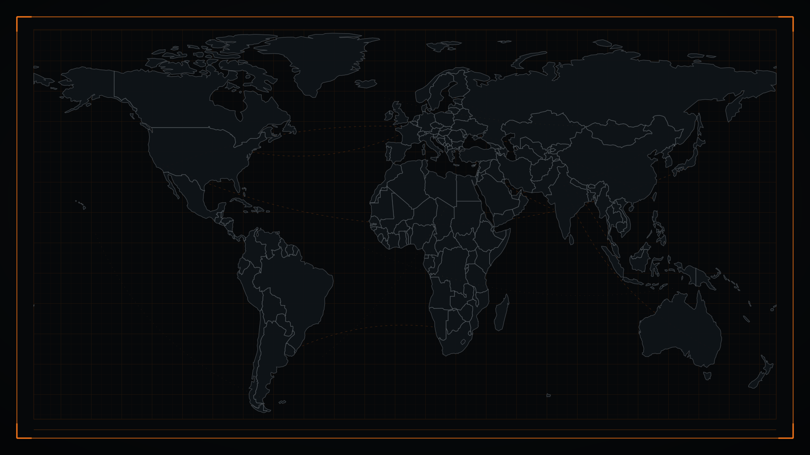
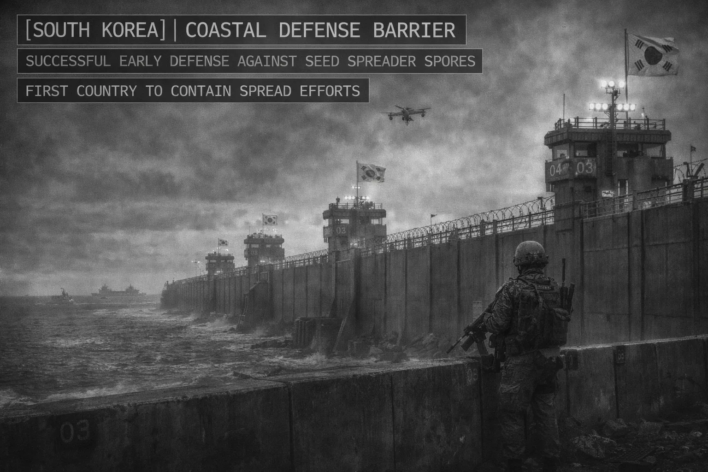
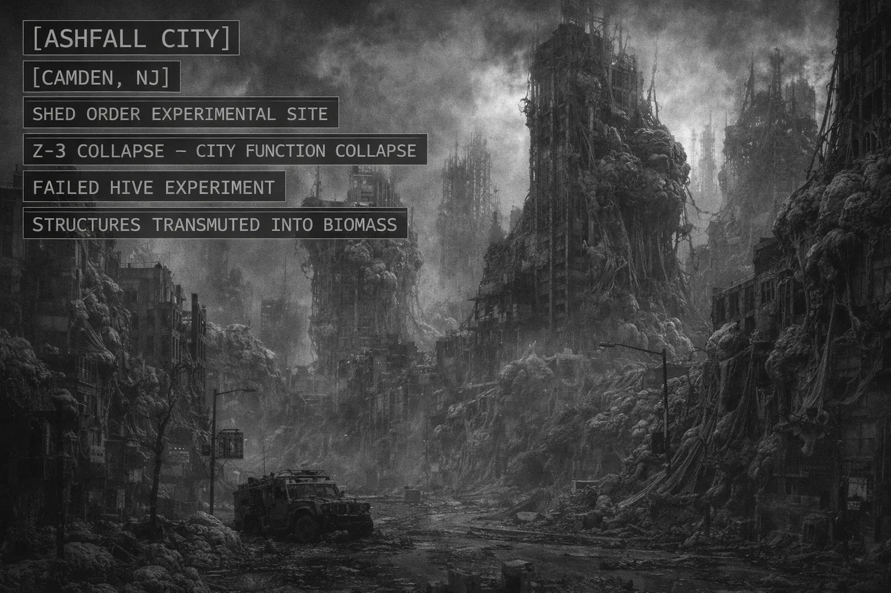
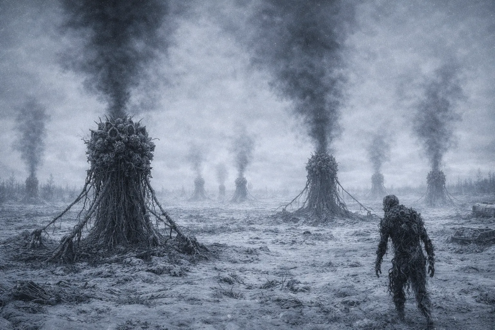
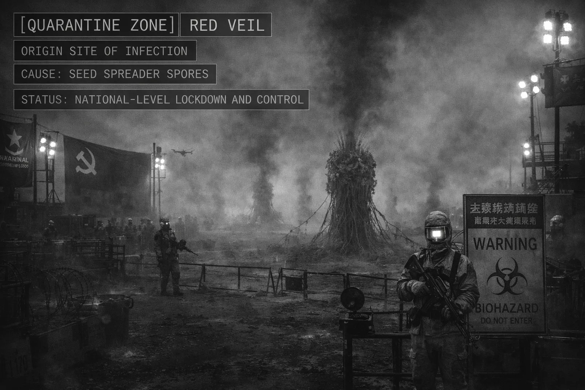
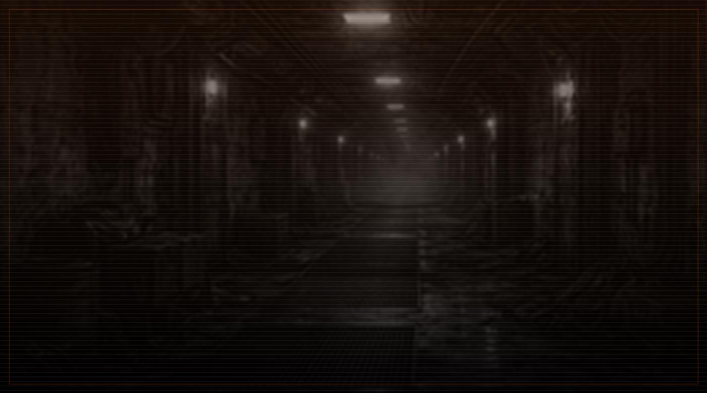
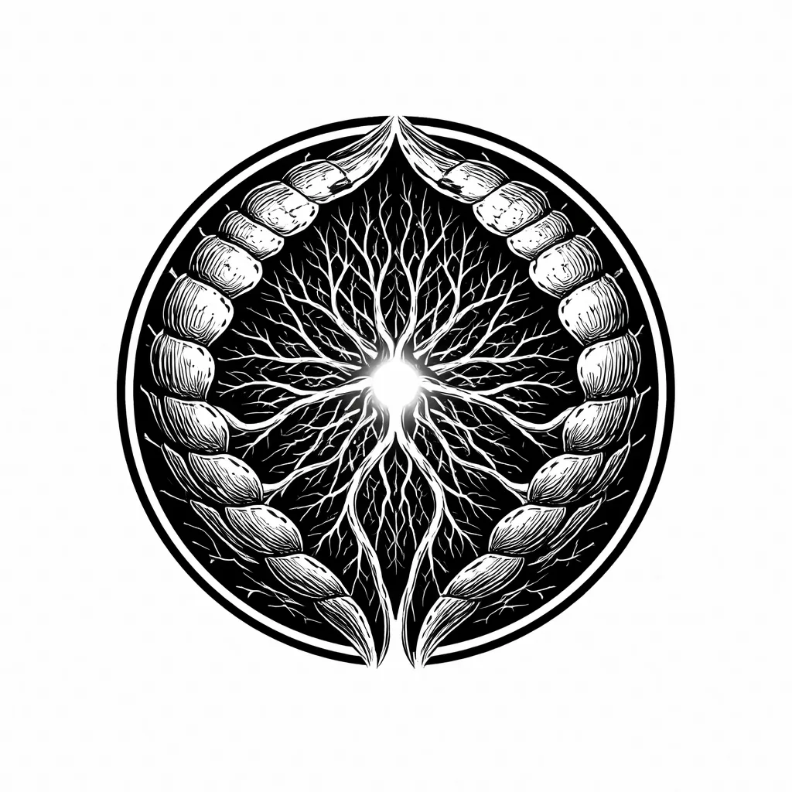
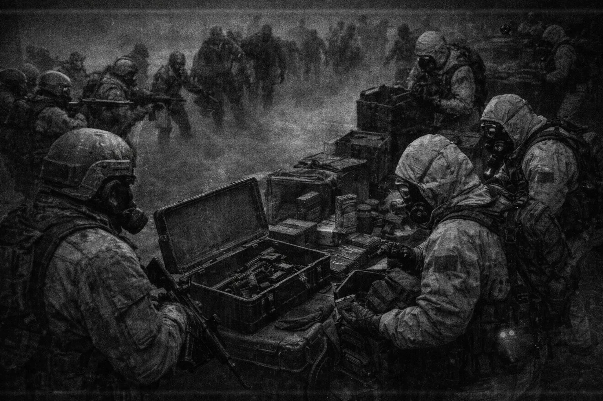
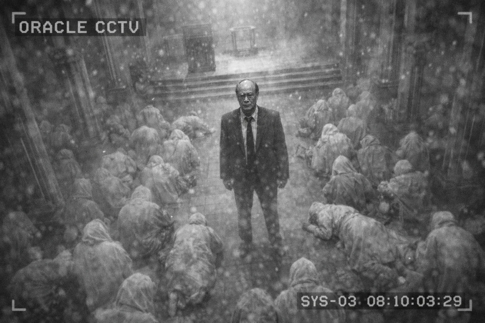

즉시 열람 가능한 사건, 권역, 지부, 세력 표면 기록.
공개 기록관
빠른 공개 색인 노드
2032년 5월 12일 기준 공개 기록망 호출.
사건 연표, 주요 권역, KR-INIT-001 단말 기록 빠른 색인.
ARCHIVE SCOPEGLOBAL
ACTIVE INDEXPUBLIC LAYER
MAP ASSETLINKED
빠른 공개 색인 노드
2032년 5월 12일 기준 공개 기록망 호출.
사건 연표, 주요 권역, KR-INIT-001 단말 기록 빠른 색인.
1900년대 초부터 2032년까지의 주요 사건 기록
전 세계 감염 확산 현황과 위협 등급 분석
한국 내 거점, 도시, 생존 구역 및 주요 인프라
세력, 지역, 사건 기록을 이어 보는 상세 색인
2032 기준 사건 연표, 지역 현황, 주요 세력, 한국 지부 단말 기록을 빠르게 확인하는 공개 색인.
1908-2032 주요 사건 시간순 색인.
ENTRY 002 / THREAT MAP한국, 러시아, 중국, 필라델피아 등 주요 사건권 지도 표시.
ENTRY 003 / KOREA BRANCH한국 방벽, KR-INIT-001, 강원 폐쇄 거점, 권한 불일치 로그.
ENTRY 004 / FACTIONS세력, 생활권, 물류권, 지역별 대응 분기 기록.
즉시 열람 가능한 사건, 권역, 지부, 세력 표면 기록.
각 항목은 아카이브 상세 기록의 원문 요약과 연결.
현재 공개 색인은 2032년 재정렬본 기준.
공개 기록관은 빠른 색인. 연표, 한국 지부, 주요 세력, KR-INIT-001 단말 기록은 상세 기록에서 확장.
2032 기준 사건권과 권역 흐름. 마커 선택 시 사건명, 위협 유형, 대응 기록 갱신.


KOREA CONTROLLED 97.3% 봉쇄 성공률. White Shield 정밀 봉쇄, KR-INIT-001 권한 불일치 로그, 중앙 분류 경로.EV-Σ 확산 이후 주요 사건권. 필라델피아, 애쉬폴, 침묵지대, 레드 베일.
한국 방벽, 강원 사건, 공개 임무 기록, 복원 단말 축.
방벽, 군 운용, 검문, 도시 행정권 재편.
선택한 지점 기준으로 사건·위협·대응 요약 갱신.
공개 색인 확장. 발생 연표, EV-Σ 확산, 세력 구도, KR-INIT-001 단말 기록.
도시 단위 붕괴와 권역별 봉쇄선. 공개 아카이브 기준 대표 사건 네 건.
 Z-Ω // PHILADELPHIAPhiladelphia Z-Ω (2024)
Z-Ω // PHILADELPHIAPhiladelphia Z-Ω (2024)대규모 봉쇄 실패. THE EXODUS 동부 해안 난민 물결의 직접 기점.

Z-3 // ASHFALL CITYAshfall City Z-3 (2024)SHED ORDER 군체 실험 실패. 도시 구조 생체 조직 전환 기록.

Z-2 // SILENT BELTSilent Belt시드 스프레더 확산권. 음향 감쇠와 이동 경로 상실 보고.

Z-2 // RED VEILRed Veil 봉쇄선도시 밀집권 내부 통제 실패. 외부 방벽과 전담군 운용 유지.
국가 대응 체계, 비공식 조직, 민간 물류권, 생존 공동체. 공개 색인은 현장 기록에 드러난 표면 활동만 연결.

CENTRAL CLASSIFICATION분류 경로는 출처를 남기지 않는다.표면 색인에는 샘플 분류, 권한 불일치, 보류 로그만 남는다.
공식 기록 밖 방벽 기술, 정보 차단, 한국 봉쇄선 협력 기록과 충돌 기록 병존.
감염을 재난이 아닌 진화로 해석한 확장 세력. Ashfall 기록의 중심 축.

TS-Ω지능이 아니라 반응.필라델피아 해역에서 표면화한 군체. 현재 영향권은 내륙 방향으로 전진 중.

SILENT WOLVES감염을 두려워하지 않는 총기 계약망.러시아권 회색지대 정보와 무장 계약망. 통신 단절권 이동 기록 다수.

ASCENSION CHOIR감염은 축복이자 저주가 아니다.재난 이후 확산된 종교적 해석권. 감염 숭배 파편과 구호 네트워크 혼재.
물류, 의료, 보험 시장을 통해 위기 물자를 이동시키는 기업권.
Ashfall 이후 귀환자와 생존자들이 만든 보복 네트워크.
강원 폐쇄 거점 배치 운용진. 한국 방벽, 산간 변종체 기록, 대피소 행정, 복원 단말 임무 로그로 연결.
 PILEHEAD이중철
PILEHEAD이중철전 육군 특수부대 장교. KR-INIT-001 공개 지휘권자.
데이터 스트림 분석, 기지 운영, 반복되는 좌표 차이 대조.
 FIELD-01강도윤
FIELD-01강도윤전 해병대 수색·전술 지휘. 현장 진입과 S.P.E.C 접촉 대응.
 BIO-01윤세진
BIO-01윤세진EV-Σ 표본 분석, Phase 0~1 전환 지연 연구.
 SYS-01임재혁
SYS-01임재혁폐쇄 단말, 접근권, 기록 오류 추적. 사라진 순간의 로그 확인.
KR-PZ-10 복원 단말. 한국 지부 사건 지도, 운용진 색인, 권한 불일치 로그 열람.
복원 단말 열람